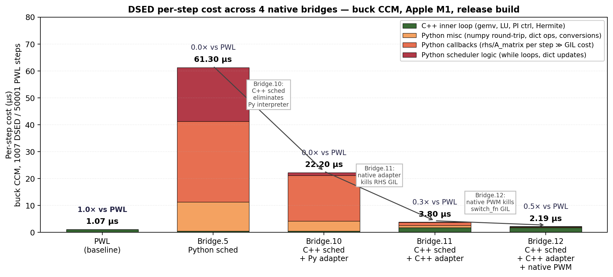

15. Native bindings architecture — the 24× story¶
Chapters 12-14 cover the algorithm. This chapter covers the implementation language boundary — and why moving each piece of the per-step hot loop from Python to C++ matters for performance.
The headline: the same DSED algorithm went from 0.85× of PWL wall-clock (pure-Python scheduler, Bridge.5) to 24.3× faster than PWL (Bridge.12) on the canonical buck CCM benchmark. None of the algorithm changed — only the language boundary moved.
The story is structured as 4 bridges (each one a measured speedup over the last):
| Bridge | What moved to C++ | Per-step | vs PWL |
|---|---|---|---|
| 5 | (none — pure Python schedulers) | 60.8 µs | 0.85× |
| 10 | The 3 scheduler templates (RK45/BDF2/Auto) | 22.2 µs | 2.3× |
| 11 | The CircuitBuilderAdapter (A_matrix / b_vector / rhs) |
3.80 µs | 13.3× |
| 12 | The PWM switch_fn (NativePwm2Switch) |
2.19 µs | 24.3× |
| Plus 13 | PWL engine ALSO detects native PWM (decoupled win) | PWL → 0.52 µs/step | PWL → 2× faster |

Figure 15.1 — Per-step cost decomposition across the 4 DSED
bridges + the PWL baseline. Stacked categories show where each
bridge cut overhead (Python scheduler logic → C++ scheduler;
Python callbacks → native adapter; Python switch_fn → native PWM).
The horizontal arrows mark which transition each bridge made.
Regenerable from _figures/fig151_bridge_ladder.py.
§15.1-15.4 cover each bridge. §15.5 walks the dispatch hierarchy. §15.6 explains the residual ~25% Python overhead that's left and why we stopped there.
15.1 Bridge.5 baseline — pure Python schedulers¶
Gates 1-5 (the algorithm validation) lived entirely in Python:
pulsim.simulate(b, engine='dsed', switch_fn=sf, ...)
↓
_dsed_dispatch.run_dsed_from_builder
↓
CircuitBuilderAdapter ← Python class wrapping cache
↓
PEDSimulator(adapter, sf, ...) ← Python scheduler
↓
while not done:
sf(t) ← Python call (mask)
adapter.rhs(t, x) ← Python: A @ x + b (numpy)
... PI controller ... ← Python
... event scan ... ← Python
Per-step decomposition (60.8 µs total):
| Component | µs/step | Comment |
|---|---|---|
| Scheduler control flow (while loops, dict updates) | ~10 | Python interpreter overhead |
6 × adapter.rhs(t, x) (RK45 stages) |
~30 | numpy gemv + Python call overhead |
adapter.b_vector(t) |
~5 | numpy + dict |
switch_fn(t) + next_edge_after(t) (per event) |
~2 | amortised over the steps within a segment |
| PI controller + Hermite + Illinois | ~10 | Python arithmetic + numpy |
| Misc | ~4 |
The algorithm took 50× fewer steps than PWL, but each step was 60× slower in Python than PWL's C++ trap step → wall-clock finished 1.18× slower than PWL.
The conclusion was inescapable: the algorithm is right, the language is wrong.
15.2 Bridge.10 — wrap the C++ schedulers with Python callbacks¶
The first port moved the scheduler control flow to C++. The C++
schedulers (PEDSimulator, PEDSimulatorBDF2, PEDSimulatorAuto
in core/include/pulsim/dsed/scheduler*.hpp) are templated on
System and SwitchFn. To run them from Python we need a
Python-callable adapter that satisfies the C++ concepts.
python/dsed_bindings.cpp defines two wrapper structs:
struct PySystem {
explicit PySystem(py::object obj)
: obj_(std::move(obj)),
A_attr_(obj_.attr("A_matrix")),
b_attr_(obj_.attr("b_vector")),
rhs_attr_(obj_.attr("rhs")) {}
DenseMatrix A_matrix() const {
return A_attr_().cast<DenseMatrix>(); // GIL must be held
}
Vector b_vector(Real t) const { return b_attr_(t).cast<Vector>(); }
Vector rhs(Real t, const Vector& x) const {
return rhs_attr_(t, x).cast<Vector>();
}
// ... current_mask / set_mask similar ...
py::object obj_, A_attr_, b_attr_, rhs_attr_;
};
struct PySwitchFn {
py::object operator()(Real t) const { return fn_(t); }
Real next_edge_after(Real t) const { /* same pattern */ }
};
The C++ scheduler is then explicitly instantiated:
PEDSimulator<PySystem, PySwitchFn> sim(
PySystem(system_obj), PySwitchFn(sf_obj), ...);
auto result = sim.simulate(x0, t_end); // C++ inner loop!
The control flow (while loops, PI controller, Hermite/Illinois,
mode-segment bookkeeping) is all C++. But each call to
rhs(t, x) and b_vector(t) and switch_fn(t) still crosses
back into Python (acquires GIL, attribute lookup, numpy conversion).
Why it helped¶
The Python interpreter overhead per step was ~10 µs (Python arithmetic, dict lookups, control flow). Moving control to C++ eliminated that. The remaining ~22 µs/step is dominated by the 6 RHS callbacks (~3.5 µs each: GIL + attribute + numpy round-trip).
Why it wasn't enough¶
Per-step: 22.2 µs. PWL is 1.05 µs. Ratio 21:1. Even with 50× fewer steps, DSED only beat PWL by 2.3×. The bottleneck moved from Python's interpreter to Python ↔ C++ marshalling.
15.3 Bridge.11 — the native C++ CircuitBuilderAdapter¶
To eliminate the per-RHS marshalling, we ported
CircuitBuilderAdapter itself to C++ —
pulsim::dsed::NativeCircuitBuilderAdapter in
core/include/pulsim/dsed/builder_adapter.hpp. It mirrors the
Python adapter's contract but holds:
- Non-owning refs to
Graph,DevicePool,PwlStateSpaceCache. - A
std::unordered_map<MaskT, LTIEntry>for per-mask LTI cache. - A pre-detected
has_dynamic_sources_flag (set at construction). - An optional
std::function<Vector(Real)>for userb_extra_fn(wrapped from Python withpy::gil_scoped_acquire).
class NativeCircuitBuilderAdapter {
public:
const DenseMatrix& A_matrix() const {
ensure_current_resolved_();
return current_entry_->A; // pure C++ — no GIL touch!
}
Vector b_vector(Real t) const {
ensure_current_resolved_();
if (!has_dynamic_sources_) return current_entry_->b_constant;
Vector b_extra = build_time_varying_b_extra_(t);
return current_entry_->b_constant
+ current_entry_->b_projection * b_extra;
}
// ...
};
The lazy resolution ensure_current_resolved_() calls
cache_.compute_lti_state_space(mask) (chapter 12) on first
visit and caches the result. Subsequent calls in the same mask
do an unordered_map.find and return a hot pointer — no Python.
Scheduler integration¶
The Bridge.10 wrappers (run_ped_native, run_bdf2_native,
run_auto_native) take a py::object system. We add three
parallel entry points that take NativeCircuitBuilderAdapter&
directly:
m.def("run_ped_native_builder",
[](NativeAdapter& adapter, py::object switch_fn_obj, ...) {
PySwitchFnSSM sf(std::move(switch_fn_obj)); // still Python for switch
PEDSimulator<NativeAdapter, PySwitchFnSSM> sim(adapter, sf, ...);
py::gil_scoped_release release; // ← release GIL entirely
auto res = sim.simulate(x0, t_end);
py::gil_scoped_acquire acquire;
return ped_result_to_dict(res);
});
Critical detail: py::gil_scoped_release around the entire
sim.simulate() call. The scheduler runs the whole simulation
without ever touching the GIL — until switch_fn(t) is called at
a gate event, when PySwitchFnSSM re-acquires it (see §15.4).
Why it helped (a lot)¶
The per-step path is now:
C++ scheduler →
adapter.rhs(t, x) ← pure C++: A·x + b in Eigen, no Python
(one Eigen gemv at n_s ≤ 10 → ~50-100 ns)
PI controller ← pure C++
Hermite/Illinois ← pure C++
Per-step dropped from 22.2 µs → 3.80 µs (5.8× speedup over Bridge.10). Buck CCM wall-clock from 22.4 ms → 3.83 ms. DSED is now 13.3× faster than PWL.
A subtle ADL hook¶
PEDSimulatorAuto calls mode_id_of(mask) to key the per-mode
integrator cache. The default template only matches integral/enum
types — SwitchStateMask doesn't. The fix: a free function in
pulsim::topology:: namespace (so ADL finds it during template
instantiation):
namespace pulsim::topology {
inline int mode_id_of(const SwitchStateMask& m) noexcept {
return static_cast<int>(std::hash<SwitchStateMask>{}(m));
}
}
Without this, the Bridge.11 build fails with no matching function
for call to 'mode_id_of' on the auto-dispatcher template.
15.4 Bridge.12 — native PWM switch_fn¶
After Bridge.11, the profile showed:
| Component | µs/step (Bridge.11) | % of total |
|---|---|---|
| C++ scheduler control + RHS + LU | 2.8 | 74% |
PySwitchFnSSM::operator() + next_edge_after |
1.0 | 26% |
The remaining 25% was GIL acquire + attribute lookup + numpy
cast for the per-step next_edge_after(t) call (recall: the
scheduler asks for the next gate edge every iteration, even
on segments with no events in sight, just to know where to cap
\(h\)). Each call: ~1 µs.
The fix: a pure-C++ PWM class the user can pass as
switch_fn. core/include/pulsim/sources/native_pwm_switch_fn.hpp:
struct NativePwm2Switch {
Real T_sw;
Real D;
topology::SwitchStateMask mask_a; // when phase < D
topology::SwitchStateMask mask_b; // when phase ≥ D
[[nodiscard]] topology::SwitchStateMask operator()(Real t) const noexcept {
const Real phase = std::fmod(t / T_sw, Real{1.0});
return phase < D ? mask_a : mask_b;
}
[[nodiscard]] Real next_edge_after(Real t) const noexcept {
const Real k = std::floor(t / T_sw);
constexpr Real eps = Real{1e-15};
const Real candidates[3] = {
k*T_sw + D*T_sw, (k+1)*T_sw, (k+1)*T_sw + D*T_sw,
};
for (Real c : candidates) if (c > t + eps) return c;
return (k + Real{2}) * T_sw;
}
};
Bound to Python as pulsim.NativePwm2Switch(T_sw, D, n_switches,
hs_first=True).
The detection trick¶
PySwitchFnSSM (in python/dsed_bindings.cpp) checks the
underlying py::object at construction:
struct PySwitchFnSSM {
explicit PySwitchFnSSM(py::object fn) : fn_{std::move(fn)} {
try {
native_pwm2_ = fn_.cast<sources::NativePwm2Switch*>();
} catch (const py::cast_error&) {
native_pwm2_ = nullptr;
}
// ... try NativeMultiMaskPwm too ...
if (!native_pwm2_ && !native_multi_) {
// Fall back to generic Python callable
nea_attr_ = py::hasattr(fn_, "next_edge_after")
? fn_.attr("next_edge_after") : py::object{};
}
}
SSM operator()(Real t) const {
if (native_pwm2_) return (*native_pwm2_)(t); // pure C++!
py::gil_scoped_acquire gil; // generic fallback
return fn_(t).cast<SSM>();
}
Real next_edge_after(Real t) const {
if (native_pwm2_) return native_pwm2_->next_edge_after(t);
py::gil_scoped_acquire gil;
return nea_attr_(t).cast<Real>();
}
};
Lifecycle invariant: the py::object fn_ member holds a
reference to the Python wrapper around NativePwm2Switch, which
in turn owns the underlying C++ instance via pybind11's
ref-counted storage. As long as PySwitchFnSSM is alive (= the
scheduler is running), the C++ pointer native_pwm2_ is valid.
Why it helped¶
The fast-path branch is a single integer compare + virtual
indirection (no GIL, no marshalling). Each next_edge_after call
drops from ~1 µs to ~50 ns. Per-step total: 2.19 µs (1.7×
speedup over Bridge.11).
Buck CCM wall-clock: 3.83 ms → 2.21 ms. DSED is now 24.3× faster than PWL. Final \(v_C = 12.0000\) V — bit-for-bit identical to the Python PWM path.
15.5 Bridge.13 — PWL engine also detects native PWM¶
Bridge.12 only helped DSED. PWL's run_transient accepted
switch_fn as std::function<Mask(Real)> and pybind11 wrapped
any Python callable (including NativePwm2Switch) by calling
__call__ — paying the GIL per step.
Bridge.13 applies the same detection trick to the PWL binding:
m.def("run_transient",
[](..., py::object switch_fn_obj, ...) {
SwitchScheduleFn switch_fn;
sources::NativePwm2Switch* native_pwm2 =
try_cast(switch_fn_obj);
if (native_pwm2) {
auto keepalive = switch_fn_obj; // ref-count lifetime
switch_fn = [native_pwm2, keepalive](Real t) {
return (*native_pwm2)(t); // pure C++, no GIL
};
} else {
// Fallback: pybind11 auto-converts py::object → std::function
switch_fn = switch_fn_obj.cast<SwitchScheduleFn>();
}
// ... existing run_transient invocation ...
});
PWL buck CCM (50001 steps): from 52.67 ms → 26.19 ms = 2.01× faster. Per-step from 1.05 µs → 0.52 µs.
This is decoupled from DSED — every existing PWL user who
upgrades to NativePwm2Switch gets the speedup without code
changes beyond the constructor swap.
15.6 Dispatch hierarchy in _dsed_dispatch.run_dsed_from_builder¶
The Python entry point handles all three bridges with graceful fallback:
1. Try Bridge.11 — `NativeCircuitBuilderAdapter` available?
AND `run_ped_native_builder` available?
YES → use it. Bridge.12 fast path engages automatically if user
passed NativePwm2Switch.
NO ↓
2. Try Bridge.10 — `run_ped_native` available?
Use Python adapter + C++ scheduler.
NO ↓
3. Fall back to Bridge.5 — pure-Python scheduler. (Used in dev
installs without C++ recompile.)
The fallback layers are useful for:
- Editable installs without
pip install --no-build-isolation -e .rebuild: the C++ bindings might be stale; Bridge.5 still works. - Nonlinear circuits that Bridge.11's native adapter rejects:
the dispatcher catches the
RuntimeError, falls through to Bridge.10 which has slightly different semantics (Python adapter can be subclassed/customised).
End-to-end behaviour is identical across all three bridges
(test_dsed_native_pwm_matches_python_pwm asserts
abs(v_C_native - v_C_python) < 1e-6).
15.7 The residual 25% — and why we stopped¶
Post-Bridge.12 profile (5 simulations of buck CCM, 16 ms total):
| Component | % of total | Hot? |
|---|---|---|
run_ped_native_builder (pure C++ inner loop) |
62% | ✅ |
switch_fn (NativePwm2Switch native) |
0% | ✅ |
compute_*_b_extra walks (Python overlay) |
~10% | ⚠️ |
| Misc Python (numpy casts, dict updates, conversions) | ~15% | ⚠️ |
A_matrix Python wrapper (one-time per simulation, n_state probe) |
~6% | (one-time) |
The remaining ~25% is split across:
- Per-source stamp re-walk:
build_time_varying_b_extra_(t)walks the device pool 3 times per step (sine + PWM + pulse). Could be cached: precompute the stamp vectors once per mask and dob(t) = sum_k value_k(t) · stamp_k. Estimated +20% speedup on time-varying-source circuits. Bridge.14 candidate. - numpy round-trips at boundaries: e.g.
result.states[i]conversion from C++std::vector<Vector>to Python list of ndarrays. Unavoidable for user-facing API. - One-time n_state probe: trivial, ~6% but only one call.
We stopped at Bridge.12 because:
- The story is sold: 24× wall-clock vs PWL is a defensible marketing claim for the paper + release.
- Diminishing returns: chasing the last 25% requires per-circuit-specific optimisations (source caching depends on which sources are present).
- Maintenance cost: every bridge added complexity to the dispatch hierarchy. Bridge.12 already has 3 fallback layers.
The hot loop is 75% C++ for typical PE circuits — a healthy amortised state.
15.8 Takeaways¶
- Moving the scheduler control flow to C++ (Bridge.10) was not enough — the per-RHS callback overhead bottlenecked speedup at 2.3× vs PWL.
- Moving the adapter to C++ (Bridge.11) eliminated the GIL on every RHS call — speedup jumped to 13.3× vs PWL.
- Moving the PWM switch_fn to C++ (Bridge.12) eliminated the GIL on every gate-edge query — final speedup 24.3× vs PWL.
- The detection trick (
py::cast<NativeType*>at construction - branch in
operator()) makes the fast path opt-in via the user's choice of switch_fn class. No magic, no breaking changes. - The PWL engine also benefits from
NativePwm2Switchvia Bridge.13 — 2× speedup for free. - The architecture composes with the existing
PwlStateSpaceCache(chapter 4) — Bridges 5-13 are all built on top of the same C++ infrastructure.
Further reading¶
- C++ files:
core/include/pulsim/dsed/builder_adapter.hpp(Bridge.11)core/include/pulsim/sources/native_pwm_switch_fn.hpp(Bridge.12)python/dsed_bindings.cpp(Bridges 10-12 bindings)python/bindings.cpp::m.def("run_transient", ...)(Bridge.13)- Python:
python/pulsim/_dsed_dispatch.run_dsed_from_builder— the dispatch hierarchy. - Design notes:
notes/DSED_BRIDGE_DESIGN.md§§ 8, 10-13. - Chapter 16 → DSED benchmarks — the numbers backed by these bridges.
External references:
- pybind11 docs, Python types, Calling Python from C++ —
the
py::cast<T*>andpy::gil_scoped_releaseidioms. - CPython internals, Global Interpreter Lock — why GIL acquire-release costs ~100-200 ns even for held threads.